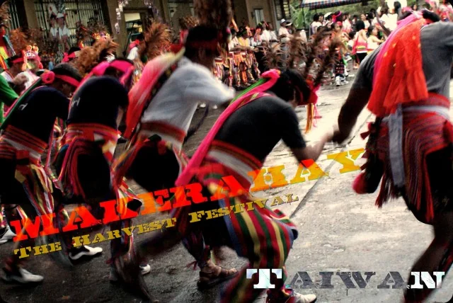
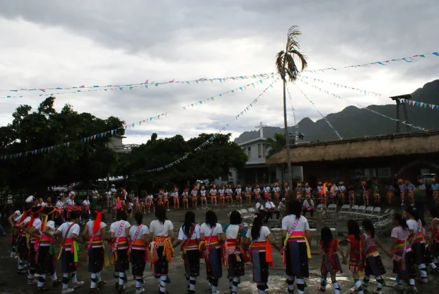
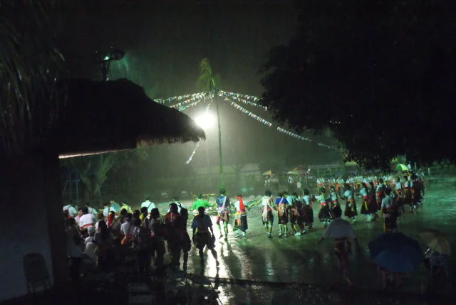
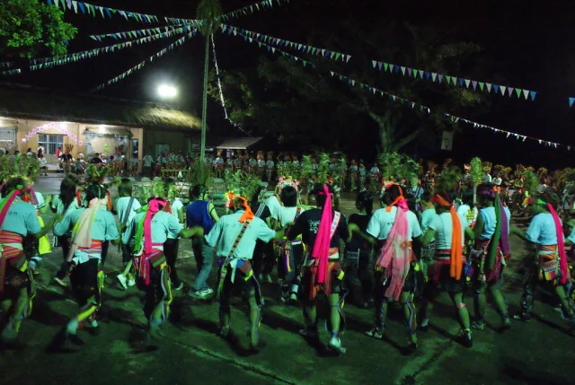
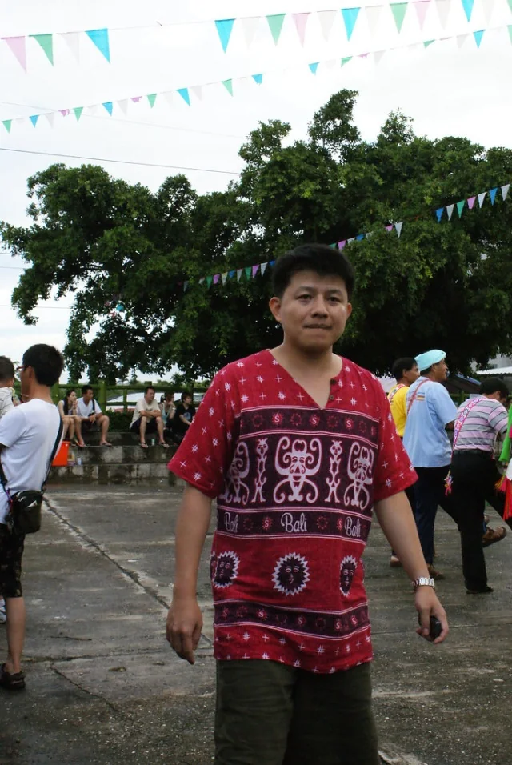
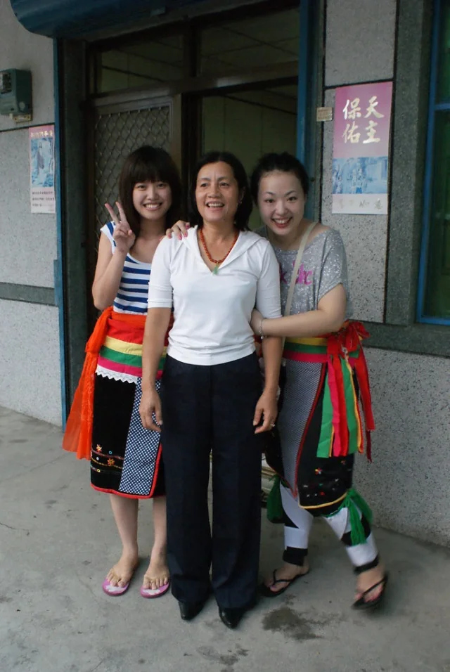
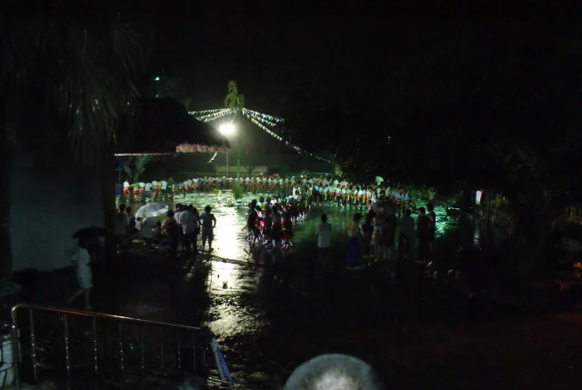

[台東長濱] 雨中躍動的原生力量：真柄部落（Makerahay）阿美族豐年祭紀實（2009.07.18）
[台東長濱] 雨中躍動的原生力量：真柄部落（Makerahay）阿美族豐年祭紀實（2009.07.18）

逐漸變大的雨勢，卻澆不熄會場中圍繞跳舞、奔跑的原生動力！
地上的溼地，像是上天特地將空氣再淨化一次，好迎接祭儀的開端。
2009 年 7 月 18 日，這是我第一次親身走進台灣的在地原鄉，體驗台東長濱「真柄部落（Makerahay）」如此歡笑逗場、充滿朝氣與活力的阿美族豐年祭。
有這麼富於生命力與新舊傳承的祭典時節，沒參加過的人有機會可別錯過了！
📌 背倚金剛山、面迎太平洋的「真柄部落（Makerahay／馬格拉海）」：
位於臺東縣長濱鄉三間村（台 11 線花東海岸公路約 83K 處）的「真柄部落（Makerahay）」，阿美族語原名「馬格拉海」，意為「乾涸之地」——因海岸山脈落差陡峭，流經部落的真柄溪在旱季常呈乾涸狀而得名。部落背靠長濱阿美族聖山「金剛山（石坑山）」與層層疊疊的海岸梯田，正前方隔著台 11 線則是浪濤拍岸的「長濱情人沙灘」，是東海岸兼具山海靈氣的傳統海岸阿美族聚落。
正式祭儀開始前，部落裡的爺爺們早已穿戴整齊，排列成歡迎隊形準備開場。
拉起手來，長輩與領唱者開始叮嚀著預備行進前的小細節；無論是族人還是外地來的客人，在那一刻都屏氣凝神，注視著儀式的行進。
踏入祭圈的步伐，如同老虎裡的生命力，在前進與後退之際充滿節奏地跳動著！
📌 阿美族豐年祭（Ilisin / Kiluma'an）與「雨水賜福」的信仰：
漢語通稱的「豐年祭」，在阿美族語中依地域稱為「Ilisin」（意指「進入祭典、恪守傳統禁忌的時刻」）或「Kiluma'an」（意指「回家團聚」）。每年 7 月中旬稻穀收穫後，這場盛會不僅是感謝天神（Malataw）與祖靈庇佑五穀豐登，更是阿美族人除舊布新的「過年」。而在部落傳統信仰裡，祭典時落下的雨水象徵祖靈到場降下的甘霖與祝福——雨水洗淨土地與人心，泥濘反而讓族人赤足踏地（Malikuda 牽手歌舞）時的步伐更加堅定。
每年的這個時節，正也是讓族裡年輕一輩再度從各地返鄉凝聚的時刻。
會場中央，年輕一輩正恭敬地接受著長者實行的古禮；而年輕人身上的穿著打扮，從傳統羽冠、十字繡霞披（情人袋 ‘Alofo）到現代元素的交融，正是村落間傳統與現代混合世代的真實寫照——唯一不變的，是族人們同心一力的參與著！

📌 支撐部落千百年運轉的脊椎——「年齡階層（Kapot）」與古禮晉階：
阿美族社會沒有文字，卻靠著嚴密的男子「年齡階層（Kapot）」制度將歷史與規範代代相傳。部落青年每隔數年便依年齡編成同一階級，從最底層負責雜役與傳令的青少年預備階層（Pakarongay）、青年階層（Kapah），一路歷練至決策部落事務的長老階層（Mato'asay）。你在現場目睹的「長者實行古禮」，正是豐年祭中最神聖的訓勉與晉階儀式——年輕人必須在長輩面前展現體魄、服從與領唱應答，接過的不只是信物，更是守護整個真柄部落的責任。
在山海之間，老老少少歡心齊聚，手牽著手在雨後清新的空氣裡齊聲吟唱，祈求新的一年豐年與平安！
📌 走進東海岸原鄉豐年祭的觀禮備忘（織・時臺東歲時祭儀指南）：
• 時間與地點：臺東縣長濱鄉真柄部落（Makerahay）豐年祭通常於每年 7 月中旬舉辦（確切日程每年由部落會議與長濱鄉公所公告）。
• 尊重祭儀空間：豐年祭是部落神聖的歲時祭儀而非商業演出。當長老進行祈福、晉階古禮或領唱傳統古調時，訪客應於外圍安靜觀禮，切勿跨越祭圈中央或阻擋行進動線拍照；待大會廣播開放「迎賓舞」邀請客人共舞時，再依循族人引導牽手入圈，感受最真摯的東海岸熱情。





🌾 台東長濱・真柄部落豐年祭（2009.07.18）系列紀錄連結：
• 台東真柄豐年祭 (2009) — Makerahay 現場紀實
• 長濱鄉真柄部落・豐年祭影像輯
同一場祭典，接著看當年的照片圖說
想沿著逐張照片回到現場，可接著翻2009 年真柄豐年祭的原始影像紀錄。這篇重整長文與當年的圖說，可以對照著讀。
其他旅途與地方紀錄，收在旅行筆記閱讀指南。
::http://itigre.com::